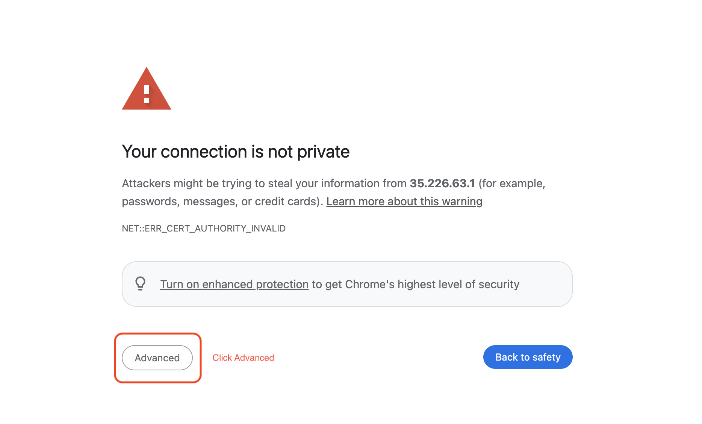
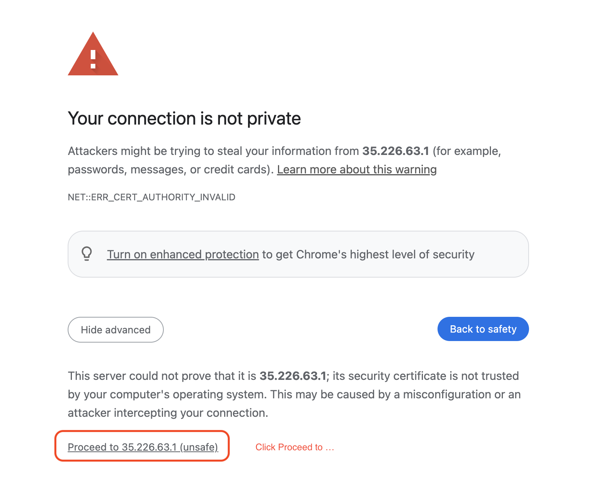
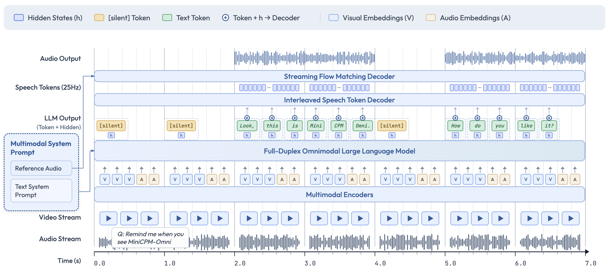

MiniCPM-o 4.5 Web Demo
A Gemini 2.5 Flash Level MLLM for Vision, Speech, and Full-Duplex Multimodal Live Streaming on Your Phone
China Server
Demo server hosted in mainland China. Best for users with Chinese network access.
39.107.237.62:7023
Open →
U.S. Server
Demo server hosted in the United States. Best for global access.
35.226.63.1:8008
Open →
Self-Deployable Code
Deploy MiniCPM-o 4.5 on your own infrastructure. Full source code on GitHub.
github.com/OpenBMB/MiniCPM-o-Demo
View on GitHub →
⚠️ Seeing a security warning?
Step 1 — Click "Advanced"

Step 2 — Click "Proceed to …"

About MiniCPM-o 4.5
MiniCPM-o 4.5 is the latest and most capable model in the MiniCPM-o series. The model is built in an end-to-end fashion based on SigLip2, Whisper-medium, CosyVoice2, and Qwen3-8B with a total of 9B parameters. It exhibits a significant performance improvement, and introduces new features for full-duplex multimodal live streaming.
Leading Visual Capability
MiniCPM-o 4.5 achieves an average score of 77.6 on OpenCompass, a comprehensive evaluation of 8 popular benchmarks. With only 9B parameters, it surpasses widely used proprietary models like GPT-4o, Gemini 2.0 Pro, and approaches Gemini 2.5 Flash for vision-language capabilities. It supports instruct and thinking modes in a single model, better covering efficiency and performance trade-offs in different user scenarios.
Strong Speech Capability
MiniCPM-o 4.5 supports bilingual real-time speech conversation with configurable voices in English and Chinese. It features more natural, expressive and stable speech conversation. The model also allows for fun features such as voice cloning and role play via a simple reference audio clip, where the cloning performance surpasses strong TTS tools such as CosyVoice2.
Full-Duplex Multimodal Live Streaming
MiniCPM-o 4.5 can process real-time, continuous video and audio input streams simultaneously while generating concurrent text and speech output streams in an end-to-end fashion, without mutual blocking. This allows MiniCPM-o 4.5 to see, listen, and speak simultaneously, creating a fluid, real-time omnimodal conversation experience. Beyond reactive responses, the model can also perform proactive interaction, such as initiating reminders or comments based on its continuous understanding of the live scene.
Strong OCR Capability & Efficiency
MiniCPM-o 4.5 can process high-resolution images (up to 1.8 million pixels) and high-FPS videos (up to 10fps) in any aspect ratio efficiently. It achieves state-of-the-art performance for end-to-end English document parsing on OmniDocBench, outperforming proprietary models such as Gemini-3 Flash and GPT-5, and specialized tools such as DeepSeek-OCR 2. It also features trustworthy behaviors, matching Gemini 2.5 Flash on MMHal-Bench, and supports multilingual capabilities on more than 30 languages.
Easy Usage
MiniCPM-o 4.5 can be easily used in various ways: Basic usage, recommended for 100% precision — PyTorch inference with Nvidia GPU. Other end-side adaptation includes (1) llama.cpp and Ollama support for efficient CPU inference on local devices, (2) int4 and GGUF format quantized models in 16 sizes, (3) vLLM and SGLang support for high-throughput and memory-efficient inference, (4) FlagOS support for the unified multi-chip backend plugin. We also open-sourced web demos which enable the full-duplex multimodal live streaming experience on local devices such as GPUs, PCs (e.g., on a MacBook).
Model Architecture

End-to-end Omni-modal Architecture
The modality encoders/decoders and LLM are densely connected via hidden states in an end-to-end fashion. This enables better information flow and control, and also facilitates full exploitation of rich multimodal knowledge during training.
Full-Duplex Omni-modal Live Streaming Mechanism
We turn the offline modality encoder/decoders into online and full-duplex ones for streaming inputs/outputs. The speech token decoder models text and speech tokens in an interleaved fashion to support full-duplex speech generation (i.e., sync timely with new input). This also facilitates more stable long speech generation (e.g., > 1min). We sync all the input and output streams on timeline in milliseconds, which are jointly modeled by a time-division multiplexing (TDM) mechanism for omni-modality streaming processing in the LLM backbone. It divides parallel omni-modality streams into sequential info groups within small periodic time slices.
Proactive Interaction Mechanism
The LLM continuously monitors the input video and audio streams, and decides at a frequency of 1Hz to speak or not. This high decision-making frequency together with full-duplex nature are crucial to enable the proactive interaction capability.
Configurable Speech Modeling Design
We inherit the multimodal system prompt design of MiniCPM-o 2.6, which includes a traditional text system prompt, and a new audio system prompt to determine the assistant voice. This enables cloning new voices and role play in inference time for speech conversation.
Model Capability Comparison
| Model | Simultaneously Listen & Speak (Speech Duplex) |
Simultaneously See, Listen & Speak (Omni Duplex) |
Live Video Captioning (Video→Text) |
Omni-modal Full-Duplex Q&A |
Omni-modal Full-Duplex Proactive Reminders |
Half-Duplex Audio Call/Video Call |
Custom Voice & Prosody in Speech Conversation |
Speech Synthesis |
OCR |
|---|---|---|---|---|---|---|---|---|---|
| Moshi | ✓ | ✗ | ✗ | ✗ | ✗ | ✗ | ✗ | ✓ | ✗ |
| Qwen3-Omni | ✗ | ✗ | ✗ | ✗ | ✗ | ✓ | ✗ | ✓ | ✓ |
| StreamingVLM | ✗ | ✗ | ✓ | ✗ | ✗ | ✗ | ✗ | ✗ | ✗ |
| LiveCC | ✗ | ✗ | ✓ | ✗ | ✗ | ✗ | ✗ | ✗ | ✗ |
| GPT-4o | ✗ | ✗ | ✗ | ✗ | ✗ | ✓ | ✗ | ✓ | ✓ |
| Gemini 2.5 | ✗ | ✗ | ✗ | ✗ | ✗ | ✓ | ✗ | ✓ | ✓ |
| MiniCPM-o 4.5 | ✓ | ✓ | ✓ | ✓ | ✓ | ✓ | ✓ | ✓ | ✓ |